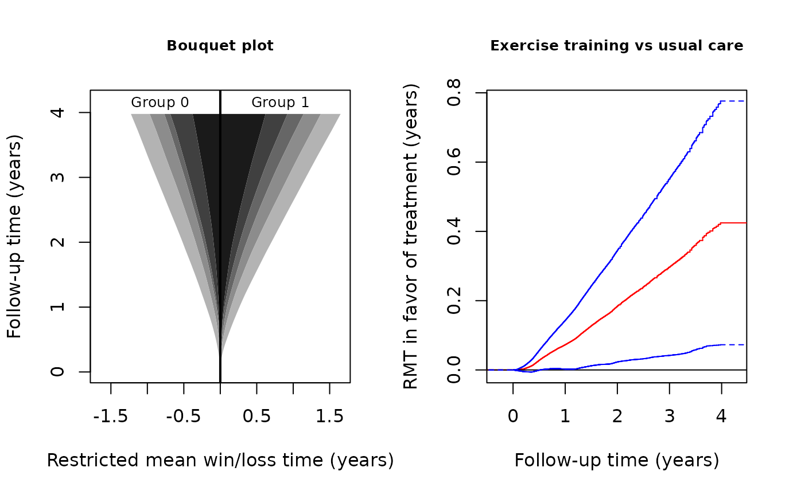

Analysis of composite endpoints of recurrent event and death by the restricted mean time in favor of treatment
recurrent_event.RmdINTRODUCTION
This vignette demonstrates the use of the R-package rmt
for the restricted-mean-time-in-favor-of-treatment approach to the
analysis of composite outcomes consisting of recurrent event and
death.
Data type
Let N(t) denote the counting process for the recurrent event, e.g., repeated hospitalizations, and let N_D(t) denote that for death. The composite outcome process is defined by Y(t)=N(t)+\infty N_D(t). That is, Y(t) counts the number of non-fatal event on the living patient and jumps to \infty when the patient dies. Traditional ways of combining the components include:
- Time to the first event: Y^*(t)=I\{N(t)+N_D(t)>0\};
- Weighted composite event process (Mao and Lin, 2016): Y^{**}(t)=N(t)+w_DN_D(t) for some w_D\geq 1;
Compared to these approaches, Y(t) has the advantage of including all events while prioritizing death in a natural, hierarchical way.
Effect size estimand
Let Y^{(a)} denote the outcome process from group a (a=1 for the treatment and a=0 for the control). The estimand of interest is constructed under a generalized pairwise comparison framework (Buyse, 2010). With Y^{(1)}\perp Y^{(0)}, let \mu(\tau)=E\int_0^\tau I\{Y^{(1)}(t)< Y^{(0)}(t)\}{\rm d}t - E\int_0^\tau I\{Y^{(1)}(t)> Y^{(0)}(t)\}{\rm d}t, for some pre-specified follow-up time \tau. We call \mu(\tau) the restricted mean time (RMT) in favor of treatment and interpret it as the average time gained by the treatment in a more favorable condition. It generalizes the familiar restricted mean survival time to account for the non-fatal events. In fact, it can be shown that \mu(\tau) reduces to the net restricted mean survival time (Royston & Parmar, 2011) if N(t)\equiv 0. For details of the methodology, refer to Mao (2021).
The overall effect size admits a component-wise decomposition: \mu(\tau)=\mu_D(\tau)+\mu_H(\tau), where \begin{equation}\tag{*} \mu_D(\tau)=E\int_0^\tau I\{Y^{(1)}(t)<\infty, Y^{(0)}(t)=\infty\}{\rm d} t- E\int_0^\tau I\{Y^{(0)}(t)<\infty, Y^{(0)}(t)=\infty\}{\rm d} t \end{equation} is equivalent to the standard net restricted mean survival time and \mu_H(\tau)=E\int_0^\tau I\{Y^{(1)}(t)< Y^{(0)}(t)<\infty\}{\rm d}t - E\int_0^\tau I\{Y^{(0)}(t)< Y^{(1)}(t)<\infty\}{\rm d}t is the average time gained by the treatment with fewer non-fatal events among the living patients. The second component can be further decomposed by \mu_H(\tau)=\sum_{k=1}^K\mu_k(\tau), where \begin{equation}\tag{**} \mu_k(\tau)=E\int_0^\tau I\{Y^{(1)}(t)<k, Y^{(0)}(t)=k\}{\rm d} t- E\int_0^\tau I\{Y^{(0)}(t)<k, Y^{(0)}(t)=k\}{\rm d} t, \end{equation} and K is the maximum number of non-fatal event. The quantity \mu_k(\tau) can be interpreted as the average time gained by the treatment before experiencing the kth non-fatal event among the living patients.
BASIC SYNTAX
Data fitting and summarization
The main data-fitting function is rmtfit(). To use the
function, the input data must be organized in the “long” format.
Specifically, we need an id variable containing the unique
patient identifiers, a time variable containing the event
times, a status variable labeling the event type
(status=1 for non-fatal event, =2 for death,
and =0 for censoring), and, finally, a binary
trt variable containing the subject-level treatment arm
indicators. If id, time, status,
and trt are all variables in a data frame
data, we can then use the formula form of the function:
Otherwise, we can feed the vector-valued variables directly into the function:
obj=rmtfit(id,time,status,trt,type="recurrent")Note that the last type option must be specified;
otherwise the input will be treated as multistate rather than recurrent
event data. The returned object obj contains basically all
the information about the overall and component-wise RMTs. To extract
relevant information for a particular \tau=tau, use
summary(obj,tau,Kmax)If the last option Kmax is specified, say, as l, then the estimates for the \mu_k(\tau) over k=l,\ldots, K will be aggregated, i.e., \sum_{k=l}^K\mu_k(\tau). Therefore, to make
inference on \mu_H(\tau), use
summary(obj,tau,Kmax=1)Plot of \mu(\cdot)
To plot the estimated \mu(\tau) as a function of \tau, use
plot(obj,conf=TRUE)The option conf=T requests the 95% confidence limits to
be overlaid. The color and line type of the confidence limits can be
controlled by arguments conf.col and conf.lty,
respectively. Other graphical parameters can be specified and, if so,
will be passed to the underlying generic plot method.
Bouquet plot
The dynamic profile of treatment effects as follow-up progresses is captured by the bouquet plot, which puts \tau on the vertical axis and plots the component-wise restricted mean win/loss times, i.e., the first and second terms on the right hand side of (*) and (**), as functions of \tau on the two sides. The bouquet plot is useful because it visualizes the component-wise contributions to the overall effect. To plot it, use
bouquet(obj,Kmax)The option Kmax performs a similar task to that in the
summary() function. For better visualization, we should
almost always specify a Kmax<K, especially when K is large. Other graphical parameters can be
specified and, if so, will be passed to the underlying generic
plot method.
AN EXAMPLE WITH THE HF-ACTION TRIAL
Data description
A total of over two thousand heart failure patients across the USA, Canada, and France participated in the Heart Failure: A Controlled Trial Investigating Outcomes of Exercise Training between 2003–2007 (O’Connor et al., 2009). The primary objective of the trial was to evaluate the effect of adding exercise training to the usual patient care on the composite endpoint of all-cause hospitalization and death. We consider a subgroup of 426 non-ischemic patients with baseline cardio-pulmonary exercise test less than or equal to nine minutes. In this subgroup, 205 patients were randomly assigned to receive exercise training in addition to usual care and 221 to receive usual care alone. With a median follow-up time about 28 months, the death rates in the exercise training and usual care groups are about 18% and 26%, and the average numbers of recurrent hospitalizations per patient about 2.2 and 2.6, respectively. The maximum number of hospitalizations per patient is K=26.
The dataset hfaction is contained in the
rmt package and can be loaded by
library(rmt)
head(hfaction)
#> patid time status trt_ab age60
#> 1 HFACT00001 0.60506502 1 0 1
#> 2 HFACT00001 1.04859685 0 0 1
#> 3 HFACT00002 0.06297057 1 0 1
#> 4 HFACT00002 0.35865845 1 0 1
#> 5 HFACT00002 0.39698836 1 0 1
#> 6 HFACT00002 3.83299110 0 0 1The dataset is already in a format suitable for rmtfit()
(status= 1 for hospitalization and = 2 for death).
Estimation and inference
We first fit the data by
obj=rmtfit(rec(patid,time,status)~trt_ab,data=hfaction)
## print the event numbers by group
obj
#> Call:
#> rmtfit.formula(formula = rec(patid, time, status) ~ trt_ab, data = hfaction)
#>
#> N Event 1 Event 2 Event 3 Event 4 Event 5 Event 6 Event 7 Event 8 Event 9
#> 0 221 170 117 86 56 33 23 15 13 13
#> 1 205 145 89 55 43 32 21 15 11 7
#> Event 10 Event 11 Event 12 Event 13 Event 14 Event 15 Event 16 Event 17
#> 0 11 7 6 6 5 3 2 2
#> 1 5 4 3 2 2 2 2 2
#> Event 18 Event 19 Event 20 Event 21 Event 22 Event 23 Event 24 Event 25
#> 0 2 1 0 0 0 0 0 0
#> 1 2 2 1 1 1 1 1 1
#> Event 26 Death Med follow-up time
#> 0 0 57 2.390144
#> 1 1 36 2.302533
# summarize the inference results for tau=3.5 years
#
summary(obj,tau=3.5,Kmax=4)
#> Call:
#> rmtfit.formula(formula = rec(patid, time, status) ~ trt_ab, data = hfaction)
#>
#> Restricted mean winning time by tau = 3.5:
#> Event 1 Event 2 Event 3 Event 4 Event 5 Event 6 Event 7
#> 0 0.2461459 0.1797341 0.07400189 0.05705096 0.06778913 0.03229824 0.02901336
#> 1 0.2606647 0.2246581 0.18911776 0.07928876 0.05043218 0.04036515 0.01434557
#> Event 8 Event 9 Event 10 Event 11 Event 12 Event 13
#> 0 0.02467620 0.01351584 0.007900133 0.001056981 0.007932054 0.0006445581
#> 1 0.01169075 0.01232759 0.009301100 0.004563094 0.001627585 0.0024747931
#> Event 14 Event 15 Event 16 Event 17 Event 18 Event 19
#> 0 0.0007787642 0.0003834044 0.0003137311 0.0001010352 0.0001123888 0.0004848228
#> 1 0.0077805017 0.0019915287 0.0007116988 0.0003040931 0.0003580146 0.0001079202
#> Event 20 Event 21 Event 22 Event 23 Event 24 Event 25
#> 0 0.0001781611 0.0007311137 0.0003162343 0.0005731831 0.001192464 0.0002290646
#> 1 0.0000000000 0.0000000000 0.0000000000 0.0000000000 0.000000000 0.0000000000
#> Event 26 Survival Overall
#> 0 0.004352256 0.2967478 1.048254
#> 1 0.000000000 0.4958881 1.407999
#>
#> Restricted mean time in favor of group "1" by time tau = 3.5:
#> Estimate Std.Err Z value Pr(>|z|)
#> Event 1 0.014519 0.047535 0.3054 0.760034
#> Event 2 0.044924 0.045661 0.9839 0.325185
#> Event 3 0.115116 0.035992 3.1984 0.001382 **
#> Event 4+ -0.013954 0.049358 -0.2827 0.777403
#> Survival 0.199140 0.093300 2.1344 0.032810 *
#> Overall 0.359745 0.154062 2.3351 0.019540 *
#> ---
#> Signif. codes: 0 '***' 0.001 '**' 0.01 '*' 0.05 '.' 0.1 ' ' 1From the above output, we conclude that, at 3.5 years, the combined
treatment on average gains the patient \mu(\tau)=0.36 extra year in a more favorable
state compared to the control. This total effect size comprises an
additional \mu_D(\tau)=0.20 year of
survival time and \mu_H(\tau)=0.36-0.20=0.16 year with fewer
hospitalizations among the living. The latter component is mainly driven
by a prolonging of time to the third hospitalization. The matrix
containing the inferential results can be obtained from
summary(obj,tau=3.5,Kmax=4)$tab.
To obtain the inferential result for \mu_H(\tau) as a whole, run
# summarize the inference results for hospitalization as a whole
obj_sum=summary(obj,tau=3.5,Kmax=1)
obj_sum$tab
#> Estimate Std.Err Z value Pr(>|z|)
#> Event 1+ 0.1606050 0.08986723 1.787136 0.07391549
#> Survival 0.1991404 0.09330039 2.134400 0.03281004
#> Overall 0.3597453 0.15406184 2.335071 0.01953971Graphical analysis
Use the following code to construct the bouquet plot and the plot for the estimated \mu(\cdot):
# set-up plot parameters
oldpar <- par(mfrow = par("mfrow"))
par(mfrow=c(1,2))
# Bouquet plot
bouquet(obj,Kmax=4,main="Bouquet plot",cex.group=0.8, xlab="Restricted mean win/loss time (years)",
ylab="Follow-up time (years)", cex.main=0.8) #cex.group: font size of group labels#
# Plot of RMT in favor of treatment over time
plot(obj,conf=TRUE,col='red',conf.col='blue',conf.lty=2, xlab="Follow-up time (years)",
ylab="RMT in favor of treatment (years)",main="Exercise training vs usual care",
cex.main=0.8)
par(oldpar)In the bouquet plot, the four bands with different shades of gray, from the darkest to the lightest, correspond to survival, 4+ hospitalizations, 3 hospitalization, 2 hospitalizations, and 1 hospitalization, respectively. We can see that the restricted mean survival time is clearly in favor of exercise training. The restricted mean win times on the second and third hospitalizations are also visibly greater in the treatment group. The 95% confidence limits for \mu(\tau) in the right panel suggests that the overall treatment effect becomes significant at the 0.05 level after approximately 1 year of follow-up and stays so till the end of the study.
References
- Buyse, M. (2010). Generalized pairwise comparisons of prioritized outcomes in the two‐sample problem. Statistics in Medicine, 29, 3245–3257.
- Mao, L. (2021). On restricted mean time in favour of treatment. Submitted.
- Mao, L. & Lin, D. Y. (2016). Semiparametric regression for the weighted composite endpoint of recurrent and terminal events. Biostatistics, 172, 390–403.
- O’Connor, C. M., Whellan, D. J., Lee, K. L., Keteyian, S. J., Cooper, L. S., Ellis, S. J., … & Rendall, D. S. (2009). Efficacy and safety of exercise training in patients with chronic heart failure: HF-ACTION randomized controlled trial. JAMA, 301, 1439–1450.
- Royston, P. & Parmar, M. K. (2011). The use of restricted mean survival time to estimate the treatment effect in randomized clinical trials when the proportional hazards assumption is in doubt. Statistics in Medicine, 30, 2409–2421.